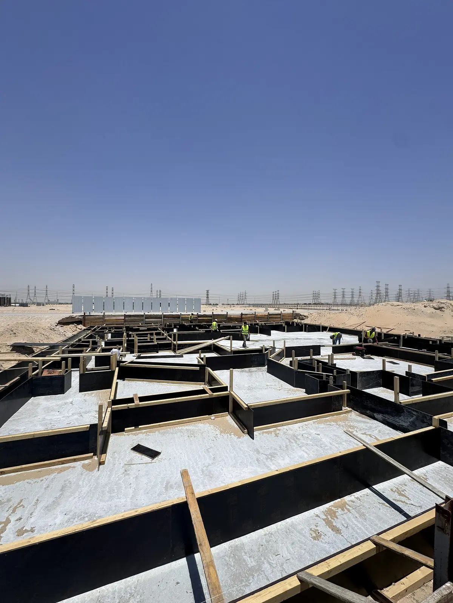

تبدأ بعض أخطاء بناء العظم في الموقع، لكن كثيرًا منها يبدأ قبل ذلك: إصدار مخطط غير واضح، فتحة خدمات لم تُنسق، عرض استثنى بندًا مهمًا، أو برنامج ضغط الصبة قبل إغلاق الملاحظات. وعندما تُغطى المشكلة بالخرسانة أو الردم أو المباني، تصبح المعالجة أصعب ويزداد أثرها على الوقت والتكلفة.
الهدف من هذا الدليل ليس البحث عن العيوب بعد وقوعها، بل بناء نقاط منع حول أكثر لحظات المشروع حساسية. كل خطأ موضح هنا يرتبط بسؤال يمكن طرحه قبل التنفيذ، وسجل يجب الاحتفاظ به، وقرار لا ينبغي تركه شفهيًا.
للمسار الكامل ابدأ بـدليل بناء العظم بالرياض، ثم استخدم قائمة فحص الجودة في المتابعة. أما أي حالة قائمة فتحتاج تقييم المختص المسؤول وفق المخططات والواقع، ولا تعالج بنصيحة عامة.
1. الخطآن 1 و2: العمل بإصدار خاطئ وتجاهل التعارضات
الخطأ الأول هو تنفيذ عنصر من نسخة قديمة أو غير معتمدة. قد تتغير فتحة أو منسوب أو تفصيلة بينما تبقى نسخة سابقة في الموقع. الحل هو سجل مخططات يوضح رقم الإصدار وحالته، وسحب النسخ الملغاة، وربط طلب الفحص بالإصدار المستخدم حتى يمكن تتبع القرار.
الخطأ الثاني هو التعامل مع تعارض المعماري والإنشائي والخدمات كمسألة يحلها العامل في اللحظة الأخيرة. أي تعارض يحتاج استفسارًا مكتوبًا وإجابة معتمدة قبل التجهيز. القرار الميداني غير الموثق قد يحل جبهة اليوم لكنه ينقل المشكلة إلى السلم أو الواجهة أو التمديدات أو التشطيبات.
2. الخطآن 3 و4: توقيع محاور غير محقق وحفر بلا مرجع
الخطأ الثالث هو الاعتماد على علامة واحدة أو قياس متسلسل دون مراجعة مرجع الموقع وحدوده والمحاور والمناسيب. الانحراف الصغير في البداية قد يظهر لاحقًا في ارتداد أو عمود أو درج أو واجهة. يجب التحقق من نقاط المرجع وحمايتها وإعادة القياس في المراحل الحرجة وفق مسؤوليات المشروع.
الخطأ الرابع هو بدء الحفر قبل ربط المنسوب والعمق بنوع التربة والمخطط وخطة التصرف في النواتج والمياه إن وجدت. لا تُقبل الحفرة لأنها تبدو متساوية؛ تُراجع الأبعاد والمنسوب والحالة الفعلية وما إذا كانت تحتاج قرارًا من المختص قبل تنفيذ ما يليها.
- حماية نقاط المرجع من الحركة أو الإزالة أثناء عمل المعدات.
- تسجيل المحاور والمناسيب قبل الحفر وبعده وقبل صب النظافة.
- إيقاف الانتقال عند ظهور حالة تختلف عما بُني عليه التصميم.
- توثيق الاستلام قبل أن تغطي المرحلة التالية الدليل.
3. الخطآن 5 و6: ردم غير منظم وعزل يُغطى قبل اختباره
الخطأ الخامس هو الردم دفعة واحدة أو بمواد غير موصوفة أو من دون ضبط الطبقات والاختبارات المطلوبة. النتيجة قد لا تظهر فورًا، لكنها قد تؤثر في الأرضيات والأعمال المحيطة. يجب تحديد المادة وطريقة الفرش والدمك ونقاط الاختبار ومسؤول اعتمادها قبل بدء الردم.
الخطأ السادس هو إغلاق العزل أو الأعمال المدفونة قبل فحص السطح والتقاطعات والحماية والاختبار المرتبط بالنظام. الصورة بعد التغطية لا تثبت حالة ما تحتها. أنشئ نقطة توقف، وصوّر التفاصيل، وأغلق الملاحظات، ثم احمِ العزل من الأعمال اللاحقة قبل السماح بالردم.
مادة الردم
مصدر ومواصفة واعتماد قبل الاستخدام.
طبقات واختبار
تنفيذ وقياس وفق متطلبات المشروع لا بالانطباع.
العزل والحماية
فحص واختبار وتوثيق قبل أن يصبح غير مرئي.
4. الخطآن 7 و8: تسليح لا يطابق التفصيل وشدة غير جاهزة
الخطأ السابع هو مراجعة وجود الحديد دون التحقق من الأقطار والأعداد والمسافات والأطوال والوصلات والتثبيت والغطاء والازدحام حول الفتحات بحسب المخطط. لا يكفي أن يبدو التسليح كثيفًا؛ الجودة هي مطابقته للتفصيل وقدرته على البقاء في موضعه أثناء الصب.
الخطأ الثامن هو اعتبار الشدة جاهزة لأنها مغلقة. تُراجع الأبعاد والمناسيب والاستقامة والدعم والإحكام والنظافة ووسيلة الصب والوصول، مع الفتحات والأجزاء المدفونة. الشدة التي تتحرك أو تسرب أو تعيق الدمك قد تحول صبة واحدة إلى سلسلة معالجات.
5. الخطآن 9 و10: خرسانة بلا خطة ومعالجة متأخرة
الخطأ التاسع هو طلب الخرسانة قبل تأكيد المتطلبات والكمية والتسلسل والوصول والمضخة والمختبر والعمالة وخطة التعامل مع التوقف. لحظة الصب لا تصلح لبدء التنسيق. استخدم اجتماع جاهزية قصيرًا وسجلًا يوضح من يقرر قبول الاستمرار إذا تغيرت الظروف.
الخطأ العاشر هو اعتبار انتهاء الصب نهاية المسؤولية. الحماية والمعالجة والمتابعة جزء من العملية، وتُنفذ بحسب العنصر والمواصفات والظروف وتعليمات المختصين. راجع دليل خرسانة بناء العظم لفهم دورة المادة من الطلب إلى السجل، دون تحويله إلى وصفة تنفيذ عامة.
- لا تبدأ الصبة مع ملاحظة مفتوحة تؤثر في العنصر.
- طابق بيانات التوريد والاختبارات مع الصبة والعنصر والتوقيت.
- خطط للدمك والتسلسل والوصول والحماية قبل وصول أول شاحنة.
- وثق أي انقطاع أو حالة غير عادية والإجراء المعتمد بشأنها.
6. الخطأ 11: فتحات وتمديدات تُقرر بعد الصب
عندما لا تُراجع الكهرباء والسباكة والتكييف مبكرًا، تظهر الحاجة إلى تخريم أو تكسير أو تغيير مسار بعد تنفيذ العنصر. الحل هو مخطط فتحات وسليفات وأجزاء مدفونة متوافق مع المعماري والإنشائي، ونقطة فحص مشتركة قبل إغلاق الشدة أو المباني.
لا يعني التنسيق السماح لأي تخصص بتعديل العنصر من تلقاء نفسه. أي فتحة جديدة أو تغيير في الموقع يحتاج مراجعة واعتماد المسؤولين عن التصميم والتنفيذ. احتفظ بصور ومواقع الأعمال المخفية لتسهيل المراحل التالية وتقليل البحث والتخمين.
قبل الصب
مواقع وأبعاد ومناسيب الفتحات والسليفات والأجزاء المدفونة.
بعد القرار
تحديث المخطط وإبلاغ الفرق وتسجيل المرجع المعتمد.
قبل الإغلاق
اختبار وتصوير وربط السجل بالمكان والعنصر.
7. الخطأ 12: إخفاء الملاحظة بدل إغلاق سببها
قد تُغطى الملاحظة بمونة أو لياسة أو تعديل شكلي بينما يبقى سببها غير مفحوص. الإجراء الصحيح يبدأ بوصف عدم المطابقة وموقعها ومرجعها، ثم تقييم السبب واقتراح المعالجة واعتمادها وتنفيذها وإعادة فحصها. لا يتحول الضغط الزمني إلى مبرر لإلغاء السجل.
اجعل من الخطأ معلومة تمنع التكرار: ما الذي سمح بحدوثه؟ هل غاب المستند أم الفحص أم المورد أم التدريب؟ حدث القائمة والبرنامج ومسؤوليات الفريق، ثم تحقق في الجبهة التالية. وعند نهاية المرحلة استخدم قائمة استلام بناء العظم للتأكد من عدم انتقال الملاحظات إلى التشطيبات.
لديك ملاحظات في مرحلة العظم؟
أرسل صور الحالة والمخططات والمرحلة الحالية لتحديد نوع المعلومات المطلوبة قبل مناقشة نطاق الفحص أو التنفيذ.
طلب استشارة أو عرض سعرالخلاصة
أخطاء بناء العظم لا تُمنع بكثرة التفتيش بعد التنفيذ، بل بتوقيت القرار الصحيح قبل أن يختفي العمل. اضبط الإصدارات والمحاور والحفر والردم والعزل والتسليح والشدات والخرسانة والفتحات، ثم أغلق أي ملاحظة بإجراء معتمد وسجل قابل للتتبع. الوقاية هنا ليست ورقًا إضافيًا؛ إنها طريقة لحماية البرنامج والميزانية والمراحل التالية.
تابع أدلة بناء العظم
انتقل إلى الدليل المحوري أو الأدلة المرتبطة، ثم إلى الخدمة عندما تصبح جاهزًا للتنفيذ.